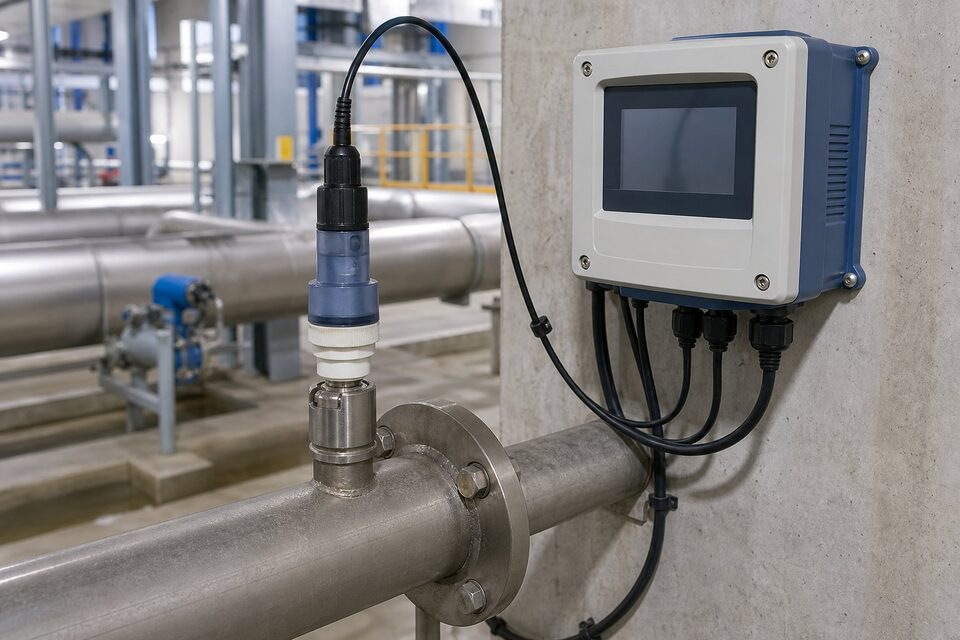

اصل اندازهگیری
اندازهگیری (pH) بر اساس پتانسیومتری انجام میشود: یک الکترود شیشهای با غشای حساس به یون هیدروژن، پتانسیلی متناسب با فعالیت این یون تولید میکند و این پتانسیل نسبت به یک الکترود مرجع با پتانسیل ثابت سنجیده میشود. حاصل، عددی در حد میلیولت است که الکترونیک ترانسمیتر آن را به مقدار (pH) تبدیل میکند. چون سیگنال بسیار کوچک و امپدانس بسیار بالاست، کیفیت کابلکشی و تمیزی اتصالات به طور مستقیم بر پایداری خوانش اثر میگذارد؛ بسیاری از خوانشهای نویزی ریشه در همین جزئیات ساده دارند.

الکترود و مرجع
الکترودهای صنعتی معمولا از نوع ترکیبی هستند: غشای شیشهای و مرجع در یک بدنه. انتخاب جنس بدنه، نوع مرجع و طراحی اتصال باید متناسب سیال باشد؛ در سیالهای حاوی سولفید یا پروتئین، مرجعهای خاصی لازم است و در فشارهای بالا، طراحی مخصوص فشار انتخاب میشود. پل نمکی مرجع نیز نقطه حساس است: گرفتگی یا آلودگی آن، دریفت ایجاد میکند. در کاربردهای دشوار، سیستمهای تمیزکاری خودکار یا نگهداری برنامهریزیشده مرجع، پایداری اندازهگیری را حفظ مینمایند.
کالیبراسیون و نگهداری
الکترود (pH) به مرور پیر میشود: پاسخ کندتر و شیب کالیبراسیون کمتر میگردد. کالیبراسیون دورهای با بافرهای استاندارد، این تغییرات را جبران میکند و معیار سلامت الکترود را نیز به دست میدهد؛ اگر شیب از حد مجاز خارج شود، زمان تعویض رسیده است. نگهداری نیز اهمیت دارد: غشای شیشهای نباید خشک شود و در فواصل کاری باید در محلول مناسب نگهداری گردد. در نقاط حساس، ثبت روندهای شیب کالیبراسیون به پیشبینی زمان تعویض و جلوگیری از توقف کمک میکند.
کاربردهای اصلی
- تصفیهخانههای آب و فاضلاب: کنترل خنثیسازی و فرایندهای بیولوژیکی.
- نیروگاهها: پایش آب تغذیه بویلر و سیستمهای خنککننده.
- صنایع شیمیایی و دارویی: کنترل واکنشها و کیفیت محصول.
- صنایع غذایی: پایش فرایند و بهداشت.
- پایش پساب و رعایت حدود مجاز زیستمحیطی.
نصب و نمونهگیری
محل نصب سنسور (pH) باید نماینده واقعی سیال باشد: از نقاط رکود، حباب هوا و رسوبگذاری پرهیز شود و جریان مناسبی از روی سنسور عبور کند. در خطوط پرفشار یا دمای بالا، محفظههای مخصوص نمونهگیری یا سنسورهای فشاربالا انتخاب میشود. کابلکشی نیز اهمیت دارد: سیگنال میلیولتی (pH) به نویز حساس است و باید از کابلهای مناسب و مسیرهای دور از کابلهای قدرت استفاده شود. در نقاط متعدد، استفاده از ترانسمیترهای میدانی نزدیک سنسور، کیفیت سیگنال را حفظ میکند.
پیری الکترود و مدیریت قطعات مصرفی
الکترود (pH) ذاتا یک قطعه مصرفی است و مدیریت عمر آن، بخش اصلی هزینه و کیفیت اندازهگیری را تعیین میکند. پیری الکترود با چند علامت تدریجی خود را نشان میدهد: افزایش زمان پاسخ، کاهش شیب کالیبراسیون، دریفت نقطه صفر و در نهایت ناتوانی در کالیبره شدن. سرعت این پیری به شدت به شرایط سرویس وابسته است؛ دمای بالا، سیالات خورنده یا حاوی ذرات ساینده و سیکلهای تمیزکاری شیمیایی، عمر را کوتاه میکنند. بنابراین به جای تکیه بر اعداد عمومی عمر، باید برای هر کاربرد بر اساس سوابق واقعی، فاصله تعویض بهینه تعیین شود. نگهداری صحیح نیز عمر را به شکل ملموسی افزایش میدهد: الکترودهای شیشهای هرگز نباید خشک شوند و در دورههای بیاستفاده باید در محلول نگهداری مناسب قرار گیرند. آلودگی نقطه مرجع، یکی از مشکلات پنهان رایج است؛ اتصال مایع مرجع با سیال فرایند میتواند به تدریج مسدود یا آلوده شود و خطای پایدار ایجاد کند. در نصبهای فرایندی، سیستمهای نمونهگیری با کنترل دما و فیلتراسیون مناسب، هم دقت را بالا میبرند و هم عمر سنسور را چند برابر میکنند. برای مدیریت اقتصادی، چند توصیه عملی وجود دارد: موجودی الکترود یدکی متناسب با فواصل تعویض نگهداری کنید، از خرید الکترودهای بسیار قدیمی در انبار خودداری کنید چون حتی در جعبه نیز پیر میشوند، و برنامه کالیبراسیون را بر اساس اهمیت هر نقطه تنظیم نمایید؛ نقاط کنترلی حساس فواصل کوتاهتر و نقاط صرفا پایشی فواصل بلندتری دارند.
جمعبندی
اندازهگیری (pH) ساده به نظر میرسد اما پایداری آن محصول سه عامل است: انتخاب سنسور متناسب سیال، کالیبراسیون دورهای با بافر تازه و نگهداری صحیح الکترود. با رعایت این سه اصل، این اندازهگیری حساس به یکی از قابل اتکاترین حلقههای پایش کیفیت تبدیل میشود و مبنای تصمیمهای عملیاتی در تصفیه و فرایند قرار میگیرد.
سوالات رایج
(pH) متر چگونه کار میکند؟
به روش پتانسیومتری: اختلاف پتانسیل بین یک الکترود شیشهای حساس به یون هیدروژن و یک الکترود مرجع اندازهگیری و به مقدار (pH) تبدیل میشود. این پتانسیل بسیار کوچک است و به تقویتکننده با امپدانس بالا نیاز دارد.
چرا الکترود مرجع اهمیت دارد؟
پتانسیل اندازهگیری شده، نسبت به مرجع سنجیده میشود؛ اگر مرجع ناپایدار باشد یا الکترولیت آن آلوده شود، خوانش دریفت میکند. بسیاری مشکلات پایداری (pH) از مرجع شروع میشود نه الکترود شیشهای.
چرا جبران دما لازم است؟
پاسخ الکترود و خود (pH) محلول با دما تغییر میکند؛ بدون جبران دما، خوانشها در شرایط مختلف قابل مقایسه نیستند. سنسور دما معمولا در بدنه سنسور یکپارچه است.
الکترود چه زمانی تعویض میشود؟
وقتی پاسخ کند شده، دریفت زیاد میشود یا شیب کالیبراسیون از حد مجاز خارج میگردد. الکترود (pH) قطعه مصرفی است و عمر آن به سیال و نگهداری بستگی دارد.
مطالب مرتبط
با ذکر سیال، دما، فشار و شرایط نصب، سنسور و ترانسمیتر (pH) متناسب از برندهای معتبر عرضه میشود.
مشاهده صفحه محصول ← ثبت RFQ همین محصولتامین این تجهیزات را به پیشرو تجهیز فرتاک بسپارید
شرکت پیشرو تجهیز فرتاک تامینکننده تخصصی تجهیزات صنعتی برای پروژههای نفت، گاز، پتروشیمی، فولاد و نیروگاهی است. برای دریافت پیشنهاد فنی و قیمت، استعلام (RFQ) خود را ثبت کنید تا کارشناسان مهندسی فروش در کوتاهترین زمان پاسخ دهند.
- تامین ابزار دقیقترانسمیترها و آنالایزرهای برندهای معتبر
- تامین تجهیزات صنایع نفت و گازپکیج مواد مطابق وندورلیست